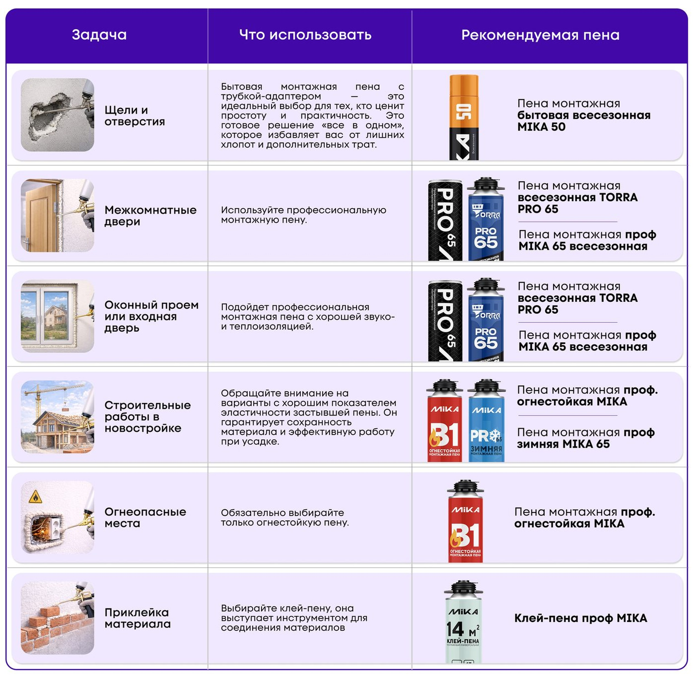

Для продавцов розницы
Собственные бренды СТМ
Короткие и понятные карточки: что продаём под своими марками, чем отличаются и что сказать покупателю.
Зачем продавцу знать СТМ
СТМ — собственные торговые марки сети. Это товары, которые мы рекомендуем в первую очередь: своя марка, понятная цена, качество без переплаты за «громкое имя».
- Легче закрыть потребность покупателя «здесь и сейчас».
- Можно собрать корзину в одном бренде (пена + пистолет, масло + леска, шуруповёрт + биты).
- На сайте помечены как «Своя марка» — это ваш аргумент в зале.
Наши бренды
Как пользоваться обучением
Одной фразой
- MIKA — основной широкий СТМ (химия, насосы, пены, тачки, расходники…).
- TORRA — бетоносмесители, пена PRO, отрезные круги.
- INALL — аккумуляторный инструмент (эксклюзив сети).
- СТМ — сантехника: краны, МП труба, фитинги, комплекты на радиатор.
